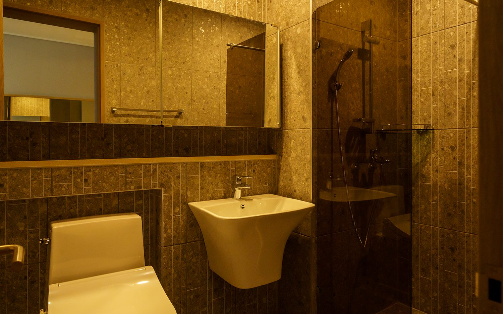
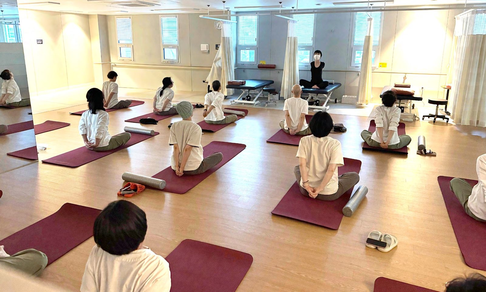

갑상선암 수술 후 회복 안내
갑상선암 진단을 받으면 누구나 두렵고 막막합니다. 수술은 물론, 동위원소 치료와 이후의 회복까지 많은 걱정이 앞섭니다. 하일렌요양병원은 수술 부위와 목소리 변화, 부종을 관리합니다. 동위원소 치료 후의 회복 입원도 돕습니다.
[디렉터 확인] 「동위원소 치료」 첫 등장 괄호 풀이 문장(D2 4-1 H-31). 원자료에 풀이 문장이 없어 확정 문장은 그대로 두었습니다. 검토 의료진이 풀이를 확정하면 위 문장의 첫 등장에 괄호로 넣습니다.

- 대상
- 갑상선암 수술 후 회복 · 동위원소 치료 후의 회복 입원
- 이용
- 입원 · 단기입원 1박 2일부터 · 외래
- 식사
- 항암식부터 위절제식·저잔사식·저요오드식까지 환자 상태에 맞춘 치료식 [디렉터 확인] 「저잔사식」「저요오드식」 첫 등장 괄호 풀이 문장(D2 4-1 H-31). 원자료에 풀이 문장이 없어 확정 문장은 그대로 두었습니다. 검토 의료진이 풀이를 확정하면 이 자리에 괄호로 넣습니다.
- 병실
- 1인실 위주로 구성
- 문의
- 원내 상담실 · 카카오톡 채널 · 062-439-1000
이런 모든 고민에 하일렌요양병원이 함께합니다.
[디렉터 확인] 「갑상선암 치료 코스」 명칭을 이 페이지에 노출할지(온라인 제목·금액 옆 비사용 원칙과의 관계). 노출하지 않으면 「갑상선암 회복 안내」로 둡니다.
수술 부위와 부종 관리
"목이 붓거나 팔·어깨가 불편해요"
수술 부위 관리는 수술한 병원의 지침을 그대로 지켜 간호팀 및 주사·상처관리팀이 이어서 살핍니다. 수술 직후에는 통증·상처·합병증을 세심하게 관리합니다.
부종은 암재활 림프 순환센터에서 림프부종 치료, 도수치료, 암재활 그룹 운동치료, 통증치료로 관리합니다. 운동 범위는 주치의가 환자 상태를 보고 환자와 상담을 통해 결정합니다.
[디렉터 확인] 샤워 가능 시점 — 수술 부위 샤워 가능 시점과 방수밴드 사용의 원내 확정 문장(의료진 확인 미완). 확정되면 이 자리에 한 문장으로 적습니다.
목소리 변화와 피로
"목소리가 변하고 너무 피곤해요"
목소리 변화는 원내 의료진이 진료에서 확인합니다.
[디렉터 확인] 「입원 첫날 진료에서 수석병원장이 직접 본다」는 문장을 홈페이지에 쓸지
표준 치료 후에는 떨어진 체력과 신체 기능 회복을 돕습니다.
목소리 변화가 좋아지지 않고 이어지는 경우도 있습니다. 치료병원 진료가 필요하다고 판단되면 안내해 드립니다.
동위원소 치료 후의 입원
"동위원소 치료는 어떻게 하나요?"
동위원소 치료의 시행 여부와 시기, 준비 방법은 치료병원에서 정합니다. 하일렌요양병원은 동위원소 치료 후의 회복 입원을 돕습니다.

항암식부터 위절제식·저잔사식·저요오드식까지, 환자 상태에 맞춘 치료식을 제공합니다.
병실은 1인실 위주로 구성되어 있습니다. 가급적 1인실을 사용하도록 하고 있으며, 1인실 입원은 외부 접촉을 줄이기 위해 시행하는 조치입니다.
[디렉터 확인] 동위원소 치료 후 입원할 수 있는 시점과 조건 — 확정 문장(「방사선으로 인한 걱정 없이」 문구의 교체 문안)이 정해지면 이 자리에 적습니다. 확정 전에는 1인실 문장을 방사선 격리 수용으로 읽히지 않게 둡니다.
식사
"입맛 없고 위장도 안 좋아요"
항암식부터 위절제식·저잔사식·저요오드식까지, 환자 상태에 맞춘 치료식을 제공합니다. 입원 첫날부터 식사 이야기를 나눕니다.

치료 후 관리와 일상 복귀
"재발이 걱정되고 계속 피곤해요"
입원 중 다른 병원 외래 진료에 필요한 진료의뢰서는 원내 주치의가 작성합니다. [디렉터 확인] 「입원 중에도 수술·항암을 받는 치료병원의 외래 일정은 그대로 이어갑니다」 구절의 원내 확정 여부(확정 기록은 진료의뢰서 작성까지, D2 결정 30번). 확정되면 이 문장 앞에 되살립니다.

입원 기간은 첫날 진료에서 함께 정합니다. [디렉터 확인] 이 문장은 2026-09-21·22 회의 기록(갑상선암 치료 코스)에 근거합니다. 입원 안내·자주 묻는 질문 페이지는 같은 사실을 미확정으로 두었으니, 확정 표기로 인정하면 그 두 페이지도 이 문장으로 채우고, 아니면 이 문장도 뺍니다.
단기입원은 1박 2일부터 이용할 수 있습니다. 외래로는 고주파온열암치료, 고압산소치료, 도수치료, 림프 관리, 고용량 비타민C, 면역 주사제, 영양공급수액을 받을 수 있습니다.
입원이 끝나도 회복은 끝나지 않습니다. 외래로 이어지는 회복 흐름을 하일렌요양병원이 함께 관리합니다. 명상은 김성훈 수석병원장이 직접 진행합니다.
단기입원과 외래 이용은 단기입원·외래 페이지에, 입원 서류와 면회는 입원 안내 페이지에 있습니다.
자주 묻는 질문
수술 후 회복은 어떻게 하나요?
수술 부위 관리는 수술한 병원의 지침을 그대로 지켜 간호팀 및 주사·상처관리팀이 이어서 살핍니다. 운동 범위는 주치의가 환자 상태를 보고 환자와 상담을 통해 결정합니다.
목소리 변화나 부종은 괜찮아질까요?
목소리 변화는 원내 의료진이 진료에서 확인합니다. 부종은 암재활 림프 순환센터에서 림프부종 치료, 도수치료, 암재활 그룹 운동치료, 통증치료로 관리합니다. 목소리 변화가 좋아지지 않고 이어지는 경우도 있습니다. 치료병원 진료가 필요하다고 판단되면 안내해 드립니다.
동위원소 치료는 어떻게 하나요?
동위원소 치료의 시행 여부와 시기, 준비 방법은 치료병원에서 정합니다. 하일렌요양병원은 동위원소 치료 후의 회복 입원을 돕습니다. 항암식부터 위절제식·저잔사식·저요오드식까지, 환자 상태에 맞춘 치료식을 제공합니다. 병실은 1인실 위주로 구성되어 있습니다.
언제쯤 다시 일상으로 돌아갈 수 있을까요?
일상 복귀 시점은 치료병원 진료에서 정합니다. 입원이 끝나도 회복은 끝나지 않습니다. 외래로 이어지는 회복 흐름을 하일렌요양병원이 함께 관리합니다.
입원할 때 어떤 서류가 필요한가요?
입원 서류는 소견서 또는 진료기록지 중 하나, 신분증, 피검사 결과지입니다. 소견서 작성이 어려우면 현재까지의 진료 기록이 담긴 진료기록지만 발급받아도 됩니다.
입원·외래·단기입원 상담은 원내 상담실에서 안내합니다. 궁금한 점 있으시면 언제든 물어보세요.
제공 하일렌요양병원 · 검토 [디렉터 확인] 검토 의료진 · 검토일 [디렉터 확인] 검토일 · 출처 하일렌 발행정본 확정 표기(2026-08-20 병원 검수), 현 갑상선암 케어 페이지 재사용 원문, 2026-09-21·22 회의 기록(갑상선암 치료 코스), 하일렌 소식지 2026 여름호 · 갱신 2026-10-05 · [디렉터 확인] 암정보 위키 03 암종별에 갑상선암 노트가 없어 근거 노트를 새로 만든 뒤 출처에 추가합니다(D2 2-2 암종별 확인 항목) · [디렉터 확인] 근거 블록 채택과 출처 표기 방식(D2 #11)